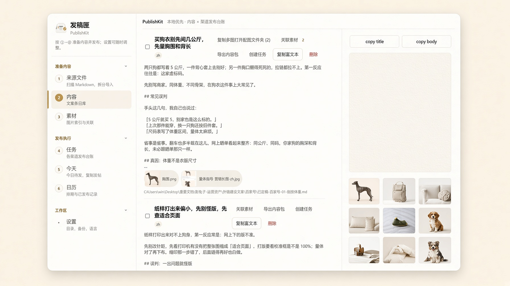

打开软件，
就知道今天该发什么
写好的正文在 Word，图片在另一个文件夹。发稿匣把它们收到一处：把一周、一月的稿排进任务，加上平台和发布链接。标题、正文、关联词、图片分开复制。可通过日历一键导出发布清单。

稿在这台电脑上
文案、图片记录和发布状态写在本机。原图留在你原来的文件夹里，发稿匣不搬走、不改写。
插件只连这台电脑
浏览器侧栏通过 127.0.0.1 找桌面端。端口和配对码在「设置 → 浏览器插件」。
账号留在平台里
发稿匣不保存平台密码，也不替你登录。你在小红书、抖音、Pinterest 自己的编辑器里检查、粘贴、发布。
将内容任务排进日历，贴出去，记一笔
支持创建多项目、多平台。一篇稿可以有多条任务，每条各记各的。
1. 排进待发
已有的稿不用一篇篇重敲。在来源文件或任务里打开「排期导入」，选 Markdown、Word 或 Excel，填起始日和间隔，勾上平台，这一周就进了待发。
2. 到平台去贴
打开那条任务，点「复制标题」「复制正文」「复制关联词」「复制图片」，再到平台编辑器里逐条粘贴。
3. 标成已发布
发出去之后，在侧栏里点「标为已发布」，填上真实链接。之后找这篇、对这笔，都有地方。
查看今日发布任务
今天到期和逾期未发的，打开就看见。明天、下周留在任务和日历里。


想复制哪一项，就复制哪一项
「复制标题」「复制正文」「复制关联词」各是各的按钮。抖音、微博这类一个输入框，正文里可以带上话题；小红书、Pinterest 则分开拿。
发帖页旁边打开 Chrome 插件
发帖页面在左，待发内容在旁。侧栏里复制标题、正文、关联词，发完就地把链接填回去。


一个平台一条进度
同一篇稿发到 Pinterest 和 Instagram，是两条任务。一条已发布，另一条还待发，不会混成一笔。支持排期导入，把一个月的待发一次排好。
发过的，都能从日历里找回来
周视图、月视图看接下来要发什么。支持「导出记录」，选项目、日期和状态，一键导出这一段的发布清单。

不替你发，把「自己发」变得更轻松
我们做什么
- 帮你看清今天该发什么，并把标题、正文、关联词、图片分开备好
- 每个平台一条记录，状态、日期和链接写在对应任务上
- 一次付费，终身使用，不按月扣
我们不做
- 不保存平台账号密码
- 不绕开平台规则，不替用户把帖发出去
- 不按月收费
- 不把稿子拿去卖
免费版先用 50 条内容。¥139 可一次性买断，终身使用。
同一篇稿发到两个平台，仍算一条内容、两条任务。激活码以 PKPRO- 开头，填在「设置 → 许可证」。
免费版
¥0- check 50 条内容
- check 支持多项目创建，每个项目拥有单独的文案夹和图片夹
- check 今天、任务、日历、排期导入、复制、插件
Pro 买断版
永久授权- check内容条数不设上限
- check免费版里的功能这里都有
- check付款后邮件发激活码
付款后邮件发送 PKPRO- 激活码 · 在设置页激活
常见问题
关于发稿匣，你可能想知道这些。
从下一篇准备发布的内容开始
免费下载。50 条内容，够你把这一周排完、发出去、记下链接。
Windows 10/11（64 位）。若出现「Windows 已保护你的电脑」，点「更多信息」，再点「仍要运行」。安装包没有代码签名，不是文件损坏。「下载 Mac 版」是 Apple 芯片（M1 及以后）。Intel 芯片用 这份 dmg。系统提示无法验证开发者时，打开「系统设置 → 隐私与安全性」，点「仍要打开」。